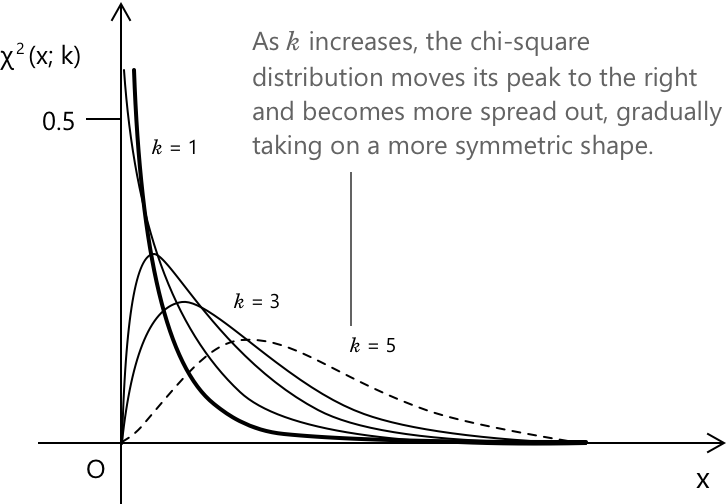
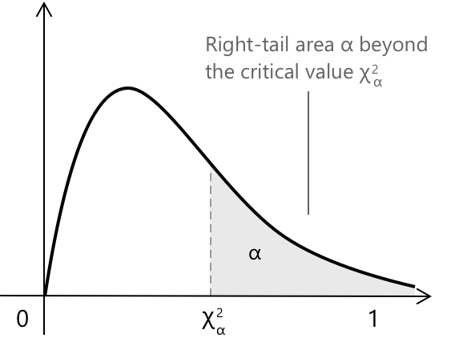

Розподіл хі-квадрат
Від квадратів нормальних величин до розподілу хі-квадрат
Розподіл хі-квадрат — це неперервний розподіл ймовірностей, який виникає при аналізі того, як поводиться сума квадратів спостережень, якщо ці спостереження мають стандартний нормальний розподіл. Точніше, коли ми говоримо, що він походить від суми квадратів, ми маємо на увазі наступну процедуру:
-
Розглянемо множину випадкових величин, що мають стандартний нормальний розподіл, тобто \(Z_1, Z_2, \dots, Z_k\) з розподілом \(\mathcal{N}(x; 0, 1)\).
-
Піднесемо кожне спостереження до квадрата: \(Z_1^2, Z_2^2, \dots, Z_k^2\). Піднесення до квадрата гарантує, що значення завжди будуть додатними, і відображає, наскільки кожне спостереження віддалене від нуля.
-
Знайдемо суму всіх цих квадратів: \[ X = \sum_{i=1}^{k} Z_i^{,2} \]
-
Розподіл ймовірностей, що описує всі можливі значення цієї суми, є розподілом хі-квадрат із \(k\) ступенями свободи.
Параметр \(k\) визначає форму розподілу, впливаючи на те, яка частина щільності зосереджена біля нуля і наскільки вона поширюється в бік більших значень, оскільки \(k\) є кількістю ступенів свободи.
Від гамма-розподілу до розподілу хі-квадрат
Інший спосіб виведення розподілу хі-квадрат — через гамма-розподіл, окремим випадком якого він є. Нагадаємо, що гамма-розподіл із параметром форми \(\alpha\) та параметром масштабу \(\beta\) має щільність
\[ G(x;\alpha,\beta)= \begin{cases} \displaystyle \frac{1}{\beta^{\alpha}\,\Gamma(\alpha)}\, x^{\alpha-1} e^{-x/\beta} & x>0 \\[10pt] 0 & x \le 0 \end{cases} \]
- Параметр \(\alpha\) керує формою розподілу
- Параметр \(\beta\) є параметром масштабу і розтягує розподіл по горизонталі.
Якщо ми встановимо \(\alpha = k/2\) та \(\beta = 2\), щільність гамма-розподілу зведеться саме до вигляду розподілу хі-квадрат із \(k\) ступенями свободи. Отже, функція щільності ймовірності розподілу хі-квадрат має вигляд:
\[ {\chi^2}(x; k) = \begin{cases} \displaystyle \frac{1}{2^{k/2}\,\Gamma(k/2)}\, x^{\,k/2 – 1} e^{-x/2} & x > 0 \\[10pt] 0 & x \le 0 \end{cases} \]
Поведінка розподілу хі-квадрат визначається ступенями свободи \(k\). Зі збільшенням \(k\) мода зміщується вправо, дисперсія зростає, а розподіл стає менш асиметричним, поступово наближаючись до нормальної форми при великих \(k\).

Розподіл хі-квадрат відіграє центральну роль у перевірці гіпотез та в оцінці параметрів, пов'язаних із дисперсією, оскільки він забезпечує теоретичну основу для багатьох процедур, що оцінюють, наскільки добре спостережувані дані узгоджуються зі статистичною моделлю і наскільки варіативність може бути приписана випадковим коливанням.
Ключові особливості
-
\[ \text{1. } \quad {\chi^2}(x; k) = \frac{1}{2^{k/2}\,\Gamma(k/2)}\, x^{\,k/2 – 1}\, e^{-x/2} \qquad x > 0 \]
-
\[ \text{2. } \quad \mu = E(X) = k \]
-
\[ \text{3. } \quad \sigma^{2} = \mathrm{Var}(X) = 2k \]
-
\[ \text{4. } \quad \sigma = \sqrt{2k} \]
Кожен вираз узагальнює фундаментальну властивість розподілу хі-квадрат. Щільність описує, як розподіл залежить від ступенів свободи \(k\), середнє значення та дисперсія кількісно визначають його положення та розсіювання, а стандартне відхилення підкреслює, як зростає дисперсія при додаванні додаткових квадратів нормальних компонент.
Вибірковий розподіл вибіркової дисперсії
Вибірковий розподіл вибіркової дисперсії описує ймовірнісну поведінку статистики \(S^{2}\), коли з однієї і тієї ж сукупності вибираються повторні вибірки. Ця концепція є фундаментальною в статистичному виведенні, оскільки вона роз'яснює, як вибіркова дисперсія пов'язана з невідомою дисперсією сукупності \(\sigma^{2}\). Припустимо, що: \[ X_1, X_2, \dots, X_n \sim N(\mu,\sigma^{2}) \] є незалежними спостереженнями з нормального розподілу. Вибіркова дисперсія визначається як \[ S^{2} = \frac{1}{n-1}\sum_{i=1}^{n}(X_i – \bar X)^{2} \] де дільник \(n-1\) враховує той факт, що вибіркове середнє \(\bar X\) використовується як оцінка \(\mu\), що зменшує кількість ступенів свободи на один.
Результат у математичній статистиці стверджує, що стандартизована величина: \[ \frac{(n-1)S^{2}}{\sigma^{2}} \] має розподіл хі-квадрат з \(n-1\) ступенями свободи. \[ \frac{(n-1)S^{2}}{\sigma^{2}} \sim \chi^{2}_{\,n-1} \]
Цей результат випливає зі структури нормальної моделі. Коли кожне спостереження стандартизується, відхилення \((X_i – \mu)/\sigma\) поводяться як незалежні змінні \(\mathcal{N}(x; 0, 1)\). Піднесення цих відхилень до квадрата дає доданки вигляду \(Z_i^{2}\), де \(Z_i\sim \mathcal{N}(x; 0, 1)\), а сума таких квадратів якраз і визначає розподіл хі-квадрат.
На практиці істинне середнє \(\mu\) невідоме і замінюється вибірковим середнім \(\bar X\). Така заміна вводить залежність між відхиленнями та зменшує кількість незалежних квадратних доданків з \(n\) до \(n-1\), що пояснює кількість ступенів свободи отриманого розподілу хі-квадрат. Тотожність: \[ \frac{(n-1)S^{2}}{\sigma^{2}} \sim \chi^{2}_{,n-1} \] отже, характеризує вибірковий розподіл вибіркової дисперсії за умови нормальності.
Розподіл хі-квадрат забезпечує теоретичну основу для виведення щодо \(\sigma^{2}\): він дозволяє будувати довірчі інтервали для дисперсії сукупності та підтримує перевірку гіпотез, що визначають, чи є спостережувана вибіркова мінливість сумісною з гіпотетичним значенням \(\sigma^{2}\).
Розуміння критичних значень хі-квадрат
Після того, як ми дізналися, що статистика:
\[
\chi^{2} = \frac{(n-1)S^{2}}{\sigma^{2}}
\]
має розподіл хі-квадрат з \(k = n – 1\) ступенями свободи за умови нормальності, наступним кроком є визначення того, чи є спостережуване значення \(\chi^{2}\) сумісним з гіпотетичною дисперсією сукупності. Щоб відповісти на це, нам потрібні критичні значення розподілу хі-квадрат, тобто точки \(x\), що задовольняють умову:
\[ P(\chi^{2}_{k} \le x) = p \]
Оскільки розподіл хі-квадрат є асиметричним і не має простої оберненої функції в замкненій формі, його квантилі не можуть бути обчислені безпосередньо за допомогою елементарної формули. З цієї причини, так само як звертаються до z-таблиць для стандартного нормального розподілу, використовуються таблиці хі-квадрат для пошуку квантилей, що відповідають конкретним ймовірностям і ступеням свободи.
При використанні цих критичних значень важливо розуміти, що вони представляють. У багатьох статистичних процедурах цікавить значення \(\chi^{2}_{\alpha}\), для якого площа в правому хвості розподілу хі-квадрат дорівнює \(\alpha\). Це значення задовольняє умову: \[ P(\chi^{2}_{k} > \chi^{2}_{\alpha}) = \alpha \] що означає, що лише частка \(\alpha\) від загальної ймовірності лежить праворуч від критичної точки.

Заштрихована область на рисунку ілюструє саме цю ідею: темна область відповідає ймовірності \(\alpha\), а межа між заштрихованою та незаштрихованою областями позначає критичне значення \(\chi^{2}_{\alpha}\).
Приклад таблиці розподілу хі-квадрат наведено нижче. Рядки відповідають числу ступенів свободи \(k\), тоді як стовпці містять кілька рівнів ймовірності \(p\), кожен з яких пов'язаний із відповідним квантилем хі-квадрат \(\chi^{2}_{p}\). Значення на перетині заданого рядка та стовпця представляє дійсне число \(x\), таке що \(P(\chi^{2}_{k} \le x) = p.\)
Ці таблиці дозволяють знайти критичні значення, необхідні при побудові довірчих інтервалів або проведенні перевірки гіпотез для дисперсії генеральної сукупності. Фрагмент нижче ілюструє перші кілька ступенів свободи разом із найпоширенішими рівнями ймовірності; багатокрапки вказують на те, що і рядки, і стовпці продовжуються далі.
| \(k\) | \(\chi^2_{.995}\) | \(\chi^2_{.990}\) | \(\chi^2_{.975}\) | \(\chi^2_{.950}\) | \(\chi^2_{.900}\) | … |
|---|---|---|---|---|---|---|
| 1 | 0.000 | 0.000 | 0.001 | 0.004 | 0.016 | … |
| 2 | 0.010 | 0.020 | 0.051 | 0.103 | 0.211 | … |
| 3 | 0.072 | 0.115 | 0.216 | 0.352 | 0.584 | … |
| 4 | 0.207 | 0.297 | 0.484 | 0.711 | 1.064 | … |
| 5 | 0.412 | 0.554 | 0.831 | 1.145 | 1.610 | … |
| … | … | … | … | … | … | … |
Повні версії таблиць хі-квадрат широко доступні в інтернеті та в більшості статистичних довідників, надаючи повний набір критичних значень для багатьох ступенів свободи та рівнів ймовірності.
Ці критичні значення є важливими для побудови довірчих інтервалів для дисперсії генеральної сукупності. Якщо ми оберемо рівень довіри \(1 – \alpha\), параметр \(\alpha\) представляє загальну ймовірність, що виключається з інтервалу. У двосторонньому випадку ця ймовірність рівномірно розподіляється між двома «хвостами», так що кожен хвіст містить \(\alpha/2\). Таким чином, центральна область розподілу хі-квадрат обмежена двома квантилями
\[ \chi^{2}_{\alpha/2,\,k} \le \chi^{2} \le \chi^{2}_{1-\alpha/2,\,k} \]
Тут \(\chi^{2}_{p,\,k}\) позначає \(p\)-й квантиль розподілу хі-квадрат із \(k\) ступенями свободи. Якщо обчислена статистика лежить у цих межах, вибірковий розкид узгоджується з гіпотетичною дисперсією; якщо вона виходить за ці межі, дані демонструють або занадто малу, або занадто велику дисперсію, щоб бути сумісними з припусканою моделлю.
Приклад 1
Виробник промислових датчиків тиску повідомляє, що вихідна мінливість його пристроїв підпорядковується нормальному розподілу зі стандартним відхиленням \(\sigma = 0.8\) PSI (фунт-сила на квадратний дюйм). Щоб перевірити, чи є заявлена мінливість правдоподібною, інженер вирішує протестувати чотири випадково обрані датчики (отже \(n = 4\)) і фіксує їхні відхилення від номінального тиску. Вимірювання разом із відхиленнями від вибіркового середнього наведені в наступній таблиці.
| Датчик | Виміряне відхилення (PSI) | \(X_i - \bar X\) | \((X_i – \bar X)^2\) |
|---|---|---|---|
| 1 | 0.5 | -0.075 | 0.0056 |
| 2 | 1.1 | 0.525 | 0.2756 |
| 3 | -0.2 | -0.775 | 0.6006 |
| 4 | 0.9 | 0.325 | 0.1056 |
Для проведення аналізу спочатку обчислимо вибіркове середнє:
\[ \bar X = \frac{0.5 + 1.1 - 0.2 + 0.9}{4} = 0.575 \]
Наступним кроком є обчислення вибіркової дисперсії, яка описує розсіювання спостережуваних відхилень навколо вибіркового середнього. Використовуючи стандартне означення несміщеної оцінки дисперсії, отримаємо:
\[ S^{2} = \frac{1}{n-1}\sum_{i=1}^{n}(X_i - \bar X)^2 = \frac{1}{3}(0.9874) = 0.3291 \]
Відповідне вибіркове стандартне відхилення, отже, становить
\[ S = \sqrt{0.3291} \approx 0.574 \text{ PSI} \]
що дає перше уявлення про мінливість, спостережену в цій конкретній вибірці.
Щоб формально оцінити, чи узгоджуються ці дані із заявленим виробником стандартним відхиленням 0.8 PSI, мінливість необхідно пов'язати з розподілом хі-квадрат. За припущенням, що генеральна сукупність дійсно має дисперсію \(\sigma^{2} = 0.8^{2} = 0.64\), статистика:
\[ \chi^{2} = \frac{(n-1)S^{2}}{\sigma^{2}} \]
має підпорядковуватися розподілу хі-квадрат із \(n-1 = 3\) ступенями свободи. Підставляючи обчислені значення, отримаємо:
\[ \chi^{2} = \frac{3 \cdot 0.3291}{0.64} = 1.542 \]
На цьому етапі спостережуване значення статистики хі-квадрат необхідно порівняти з інтервалом, який містить центральні 95% розподілу \(\chi^{2}_{3}\). Відповідні межі такі:
\[ 0.215 \le \chi^{2} \le 7.815 \]
Оскільки спостережуване значення \(1.542\) потрапляє в цей проміжок, вибірка не виявляє незвичайної мінливості відносно того, що очікувалося б, якби істинне стандартне відхилення дійсно становило 0.8 PSI. Іншими словами, дисперсія, спостережена у чотирьох протестованих датчиках, цілком узгоджується із твердженням виробника.